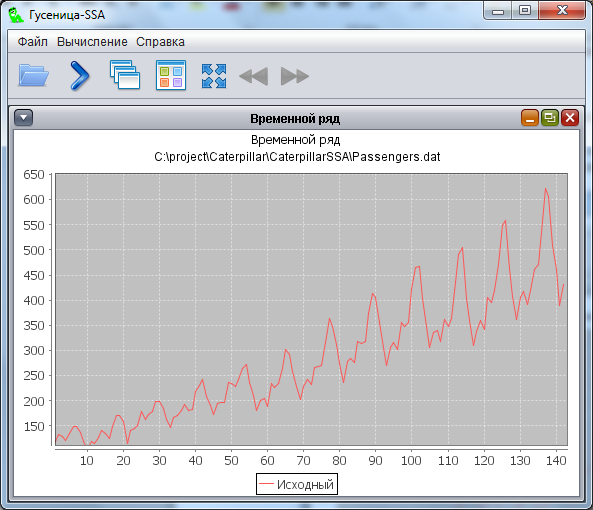
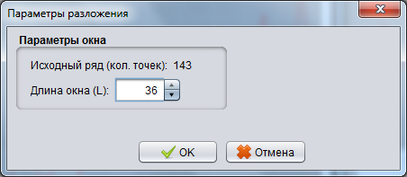
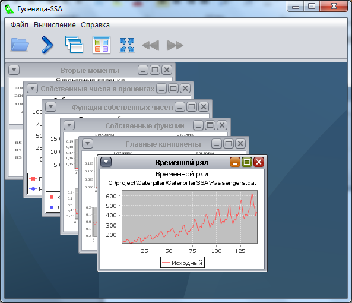
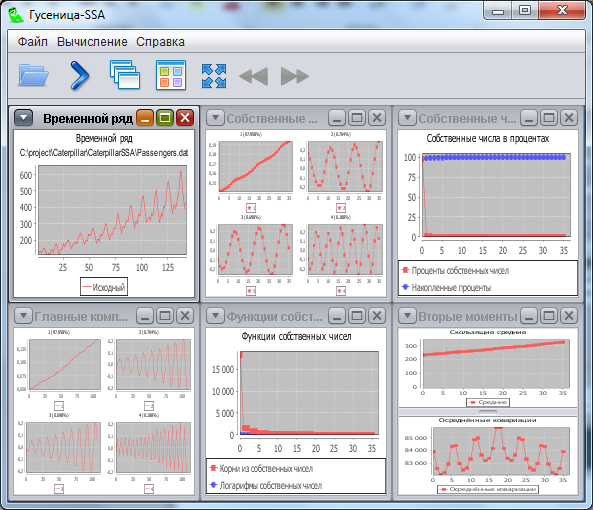
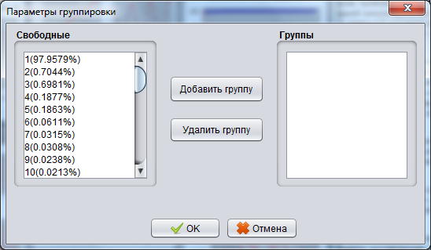
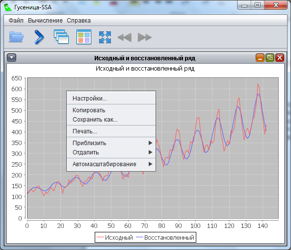

Управление программой осуществляется с помощью кнопок инструментальной панели, расположенной в верхней части окна. Опишем их по порядку (слева направо):
- открытие файла
- выбрать следующее окно
- каскадное расположение окон в программе
- мозаичное расположение окон в программе
- максимизировать все окна
- выбрать следующую группу графиков
- выбрать предыдущую группу графиков
Кнопка находится в активном состоянии (её можно нажать), если применение её функции в данный момент осмысленно.
Работу с программой необходимо начинать с открытия файла ряда. Файл должен представлять собой набор чисел с пробельными символами между ними. После открытия файла отображается выбранный временной ряд.

После выбора временного ряда необходимо выбрать пункт меню Вычисление => Разложение.

Здесь необходимо указать длину окна L. Для удобного просмотра результатов можно использовать кнопки инструментальной панели.


Для осуществления восстановления временного ряда необходимо выбрать пункт меню Вычисление => Группировка и восстановление

Для того, чтобы сгруппировать собственные тройки, необходимо, удерживая CTRL, выбрать те компоненты, которые будут соответствовать одной группе и нажать кнопку Добавить группу. Аналогичным образом происходит удаление групп.
Для удобной работу с графиками приложения предусмотрено контекстное меню, которое вызывается щелчком правой кнопки мыши по области графика.
